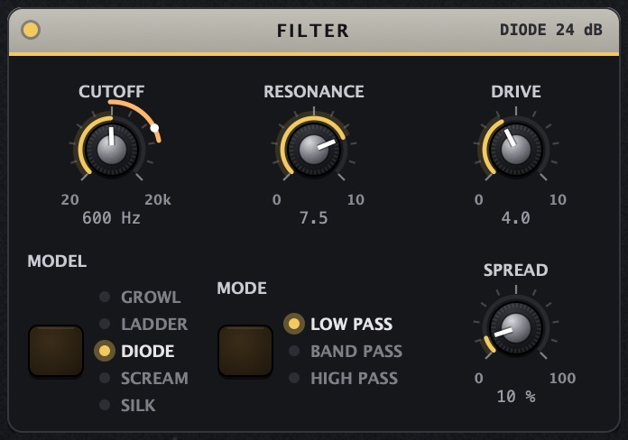
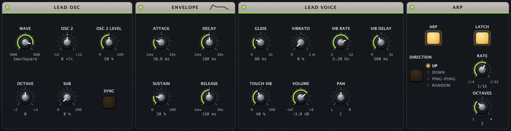
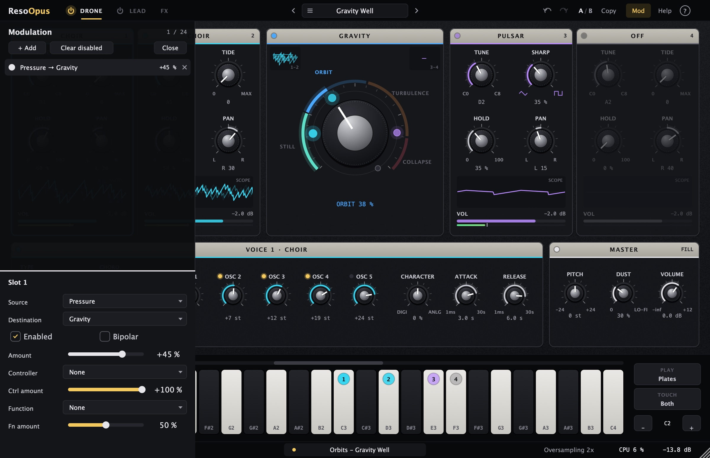

Uživatelská příručka · verze 0.1.0
ResoOpus
Drone syntezátor pro filmové, ambientní a experimentální plochy. Čtyři ručně a mikrotonálně laděné hlasy ve dvou párech hrají hned po vložení do stopy. Uprostřed je velký knob GRAVITY, který vede od čistého ladění k chaosu. K tomu filtr s pěti charaktery, ozvěna, prostor a melodická vrstva LEAD s arpeggiatorem.

01Jak funguje
ResoOpus je nástroj, který zní sám od sebe. Každý hlas má HOLD, tedy úroveň, na které hraje i bez doteku. Když hlas zahraješ, zesílí nad tuto úroveň a po puštění se do ní zase vrátí. Klávesy tak drone nespouští, ale tvarují.
| Stránka | Co obsahuje |
|---|---|
| DRONE | Čtyři hlasy (typ, ladění, HOLD, PAN, hlasitost), GRAVITY, detail vybraného hlasu, MASTER (PITCH, DUST, VOLUME, FILL). |
| LEAD · FX | Nahoře FILTER, ECHO a SPACE pro celý nástroj. Dole melodická vrstva LEAD (oscilátory, obálka, vibrato) a ARP. |
Hlasy jsou ve dvou párech: 1·2 a 3·4. GRAVITY nechává hlasy v páru, a později všechny čtyři v kruhu, navzájem se modulovat. Hlasy, LEAD i filtr běží převzorkovaně (výchozí 2×), takže ani vysoké tóny a silná modulace nezní digitálně. Na konci je měkký limiter, který drží výstup pod −0,3 dBFS.
Nic nehraje? Je to v pořádku.Některé presety (Slow Bloom, Requiem Air, Four Plates) mají HOLD na nule: zní, jen když hraješ. Ostatní presety droní hned po vložení.
02Rychlý start
- Vlož ResoOpus na MIDI stopu v Abletonu (Plug-Ins → Gavr → ResoOpus). Hned uslyšíš drone.
- Zahraj bílé klávesy C3, D3, E3, F3 (na klávesnici dole označené 1–4). Každá zesílí jeden hlas. Čím silněji, tím víc.
- Otoč GRAVITY uprostřed. Doleva čisté ladění a pomalé zázněje, doprava se hlasy začnou chvět, vrčet a nakonec pulzovat samy.
- Klikni na název presetu nahoře. Otevře se prohlížeč s kategoriemi a popisem, co u presetu otočit nejdřív.
- Na stránce LEAD · FX zkus FILTER, ECHO a SPACE. Ikonou napájení u záložky zapneš LEAD: klávesy mimo C3–F3 pak hrají melodii.
03Hlasy

Každý hlas je samostatný modul. Klikem do něj ho vybereš a jeho podrobnosti se ukážou v panelu VOICE pod ním.
- Hlavička ukazuje typ a číslo hlasu (= číslo plate na klávesnici). Tečka vlevo svítí, když hlas zní.
- TUNE: ladění C0–C8, volné a mikrotonální. Dvojklikem napíšeš notu i s centy, třeba
D2+12. - Druhý knob mění podle typu: TIDE (CHOIR), FM (SIREN), SHARP (PULSAR).
- HOLD: úroveň droneu bez doteku. 0 % = hlas zní jen při hraní.
- PAN: poloha vlevo a vpravo.
- Křivka ukazuje hlasitost hlasu za posledních ~8 s. Náběh je ATTACK, pokles RELEASE, čárkovaná čára HOLD.
- VOL: tažením hlasitost (−60 až +6 dB), dvojklik = −2 dB. Tenký zelený proužek pod ní je aktuální úroveň.
V detailu hlasu je vždy TYPE (OFF / CHOIR / SIREN / PULSAR), ATTACK (1 ms–30 s, jak pomalu hlas nabíhá i při náběhu HOLD) a RELEASE (1 ms–30 s, jak dlouho doznívá). Vypnutý hlas (OFF) nebere CPU.
04CHOIR · SIREN · PULSAR
CHOIR: pět pil jako akord

- CHORD naplní všech pět intervalů najednou: Unison (pár centů od sebe, zázněje), Octaves, Fifths, Major (0 4 7 12 16), Minor (0 3 7 12 15).
- OSC 1–5: interval každé pily nad TUNE (−24 až +36 půltónů). Tažení se Shift jde po centech. LED nad knobem pilu vypne.
- TIDE (v modulu hlasu): do 50 % stahuje celý akord dolů. Nad 50 % klesá dál a pily se začnou navzájem modulovat: vrčení, kovové alikvoty a praskání na dně.
SIREN: sirény, ptáci, monstra, vítr

| Ovladač | Co dělá |
|---|---|
| FM (v modulu hlasu) | Jak daleko modulátor táhne výšku, až ±3 oktávy. |
| RATE | Rychlost modulátoru 0,05–300 Hz: pomalé houkání, trylky, bzučení. Nad ~30 Hz vzniká nová barva tónu. |
| AM | Jak moc modulátor seká tón na pípnutí (morseovka, alarm). |
| DIVIDER | Přidá podtón: 1:2 = oktáva dolů, 1:3, 1:5… až 1:16. Vrčení a monstra. |
| NOISE | Bílý šum: vítr, příboj, statika. |
| WAVE | Tvar modulátoru: 0 = obdélník (dvoutónová siréna), 100 = trojúhelník (kvílení). |
PULSAR: jeden tón, který rozkvete

- SHARP (v modulu hlasu): tvar tónu od měkkého trojúhelníku přes „žraločí ploutev“ a pilu po ostrý obdélník.
- BLOOM: obálka ohýbá tón. Začne trochu podladěný a matný a rozkvete do výšky a jasu.
- TWIN a BLEND: druhý tón nad prvním (−12 až +24 půltónů). Pár centů od unisona = pomalé zázněje, 7 = kvinta.
- SUB: měkký tón o oktávu níž. VIBRATO: až 50 centů, každý hlas má trochu jinou rychlost, takže se nikdy nechvějí společně.
Průběhy oscilátorů
Nákresy jsou vyrenderované přímo z DSP kódu pluginu (stejné třídy, které hrají v Abletonu), ne z ideálních tvarů. Výška každého grafu je srovnaná na stejné maximum, skutečné hlasitosti se liší.
CHOIR
SIREN
PULSAR
LEAD · WAVE
- CHOIR je pět pil. CHORD je jen naladí na různé intervaly. Jejich součet je zubatý a s každou periodou se mění, protože pily nejsou fázově svázané. Unison „dýchá“ pomalými zázněji. TIDE nad 50 % nechá každou pilu frekvenčně modulovat sousední (kruh pěti pil): pravidelné zuby se rozbijí a vzniká vrčení.
- SIREN je obdélník s pomalým modulátorem. FM houpe výškou až o ±3 oktávy (WAVE: obdélník = skok mezi dvěma tóny, trojúhelník = plynulé kvílení). AM tón seká na pípnutí s hranami zaoblenými na 2 ms. DIVIDER přidá druhý obdélník s nižší frekvencí (1:2 až 1:16), proto „schody“. NOISE přimíchá bílý šum.
- PULSAR je jeden oscilátor s plynule měnitelným tvarem. SHARP vede trojúhelník → žraločí ploutev → pila → obdélník, mezipolohy jsou plynulé prolínání. TWIN přidá druhý tón stejného tvaru, SUB měkký tón o oktávu níž. BLOOM při náběhu tvar otupí (až o 60 centů níž) a s hlasitostí ho rozevře.
- LEAD má stejný tvarový oscilátor, jen začíná o krok dřív, sinusem: WAVE 0–4 = sinus → trojúhelník → žraločí ploutev → pila → obdélník. Dva oscilátory se mixují, OSC 2 se může synchronizovat na OSC 1 (SYNC).
Všechny oscilátory jsou pásmově omezené: skoky v pile a obdélníku se vyhlazují (BLEP), takže nevzniká digitální aliasing. Hlasy navíc běží převzorkovaně. Naměřený aliasing je −93 dB.
05GRAVITY
GRAVITY je srdce nástroje: jeden knob od ladění k chaosu. Hlasy se navzájem frekvenčně modulují, nejdřív v párech, pak v jednom kruhu, a nakonec do smyčky vstupuje i výstup nástroje.


Barevné tečky na oběžné dráze jsou hlasy v barvě svého typu. Čím víc znějí, tím jsou větší, a s rostoucí GRAVITY se k sobě přitahují a třesou. Hlasitost se mezi STILL a COLLAPSE mění jen asi o 2 dB, takže GRAVITY můžeš automatizovat bez skoků.
- Pravé tlačítko na GRAVITY → PATH: Auto (páry do poloviny, pak kruh), Pairs (vždy jen páry 1·2 a 3·4), Ring (vždy kruh 1→2→3→4→1). V menu je i Modulate with.
- Tažení nahoru a dolů (Shift jemně), kolečko, dvojklik = napsat hodnotu, Cmd/Ctrl-klik = výchozí 15 %.

Když GRAVITY moduluješ, ukáže se kolem knobu prstenec v barvě zdroje a tečka jeho aktuální hodnoty. Tažením prstence měníš hloubku.
Nejlepší kombinace je tlak prstu (aftertouch) na GRAVITY: lehký dotek drží hlasy na oběžné dráze, silnější je stáhne do turbulence. Takhle jsou nastavené presety Gravity Well a Event Horizon.
ECHO TO VOICES na stránce FX vrací ozvěnu do hlasů jako další FM. S vyšší GRAVITY se pak celý nástroj stane jednou smyčkou.
06MASTER a DUST

- PITCH: transpozice všech čtyř hlasů najednou (±24 půltónů), intervaly mezi nimi zůstanou.
- DUST: analogový život. Pomalé bloudění ladění, hlasy prosakují jeden do druhého a v pozadí je tichý dech šumu (nejvýš −54 dBFS). 0 % = čistě digitální.
- VOLUME: výstupní hlasitost (−∞ až +12 dB).
- FILL (vpravo v hlavičce): rozloží čtyři hlasy do zvolené stupnice od zvoleného základu. Rychlá cesta k laděnému akordu.
07FILTER · ECHO · SPACE

FILTER

Stereo filtr pro celý nástroj, běží převzorkovaně. CUTOFF 20 Hz–20 kHz, RESONANCE 0–10, DRIVE 0–10, SPREAD rozladí levý a pravý filtr proti sobě (širší stereo). MODE: Low Pass, Band Pass, High Pass (High Pass vezme spodek a nechá čisté vysoké drony).
| Model | Strmost | Charakter |
|---|---|---|
| GROWL | 12 dB | Špinavý stavový filtr se saturujícími integrátory. Hlasitý vstup a rezonance vrčí. |
| LADDER | 24 dB | Tranzistorový žebřík: kulatý, při vysoké rezonanci trochu ztenčí basy a zpívá. |
| DIODE | 24 dB | Diodový žebřík s provázanými stupni: gumový „squelch“, rezonance spíš kouše než zvoní. |
| SCREAM | 12 dB | Ořezaná rezonanční smyčka: ostrý, křičí a při vytočení piští. |
| SILK | 12 dB | Čistý a hladký, jemně se omezuje jen vstup. Na klidné plochy. |
Při plné rezonanci si Band Pass udrží hlasitost (u všech modelů od +0,6 do +9,8 dB proti rezonanci 0). Úzké pásmo tedy nezmizí, ale zpívá.
ECHO

- Dvě linky (TIME 1 vlevo, TIME 2 vpravo, 5 ms–2 s) s křížovou zpětnou vazbou. Změna času klouže jako u pásky.
- FEEDBACK: nad ~55 % začne echo samo zpívat. Stojaté vlny pak můžeš „hrát“ knobem TIME. Smyčka má strop, takže hlasitost neuteče.
- MIX: poměr suchého signálu a ozvěny. MOD a MOD SOURCE: Self = echo moduluje svůj čas samo sebou (rezonance se rozkolísají), LFO = pomalý sinus.
- TO VOICES: ozvěna se vrací do hlasů jako FM. Viz GRAVITY.
SPACE

Pět algoritmů. Popisky knobů X, Y a Z se mění podle algoritmu a krátký popis je přímo v panelu. BLEND je poměr suchého signálu a efektu.
| Algoritmus | X · Y · Z | Zvuk |
|---|---|---|
| AURORA | OCT UP · OCT DOWN · DECAY | Shimmer: dozvuk při doznívání stoupá o oktávu nahoru nebo klesá dolů. |
| VOID | PRE-DELAY · WOBBLE · DECAY | Obrovský tmavý prostor. DECAY úplně nahoře zmrazí, co zrovna zní (FREEZE). |
| RUNNER | FEEDBACK · TIME · PITCH | Opakování, která stoupají nebo klesají. PITCH na opakování, střed = beze změny. |
| SATURN | FREQUENCY · STEPS · ROOM | Kovový kruhový modulátor. STEPS skáče po náhodných notách, ROOM přidá prostor. |
| COMET | FEEDBACK · TIME · WOBBLE | Špinavý saturovaný delay, který při vysokém FEEDBACK zpívá. |
Všechny smyčky ve FX mají strop a kompenzaci podle feedbacku a stereo vyvážení se drží podle vstupu. Ani ECHO na 100 %, ani COMET nevyletí v hlasitosti a neujedou do jednoho kanálu (měřeno v rozmezí ±3 dB, L/R do 1 dB).
08LEAD a ARP

LEAD je monofonní melodická vrstva nad dronem. Zapíná se ikonou napájení u záložky LEAD · FX (zlatá = hraje). Pak hrají LEAD všechny klávesy mimo plates C3–F3. V režimu Keys hrají LEAD všechny klávesy. LEAD jde přes stejný FILTER, ECHO i SPACE jako hlasy.
| Panel | Ovladače |
|---|---|
| LEAD OSC | WAVE plynule Sine → Triangle → Shark fin → Saw → Square. OSC 2 interval ±12 půltónů (pár centů = chorus, 7 = kvinta), OSC 2 LEVEL, OCTAVE ±2, SUB sinus o oktávu níž, SYNC = tvrdá synchronizace (OSC 2 pár půltónů nahoru pro klasické trhání). |
| ENVELOPE | ADSR: ATTACK 1 ms–10 s, DECAY a RELEASE 1 ms–30 s, SUSTAIN. |
| LEAD VOICE | GLIDE (klouzání mezi překrývanými notami, 0–2 s), VIBRATO (100 % = půltón), VIB RATE, VIB DELAY (vibrato nabíhá až po nástupu noty), TOUCH VIB (víc vibrata silnějším tlakem), VOLUME, PAN. |
| ARP | ARP zapne arpeggiator, LATCH ho nechá běžet i po puštění kláves. DIRECTION Up / Down / Ping-Pong / Random, RATE 1/4 až 1/32 včetně triol, OCTAVES 1–4. Běží v tempu skladby. |
Hraje vždy poslední zmáčknutá nota. Po jejím puštění se LEAD vrátí na předchozí drženou notu.
09Modulace

ResoOpus má 24 modulačních slotů. Každý vede zdroj → funkce → controller → amount → cíl. Cílem může být jakýkoli spojitý knob hlasů, GRAVITY, FX i LEAD.
- Pravým tlačítkem na knob → Modulate with → zdroj.
- V panelu Mod (vpravo nahoře nebo klávesa 9) tlačítkem + Add.
- Zdroje: Velocity, Mod Wheel, Pressure (aftertouch), Pitch Bend, Constant.
- Controller funguje jako „VCA“: modulace je jen tak silná, jak velký je druhý zdroj (např. velocity → TIDE s controllerem Mod Wheel).
- Function: Scale, Offset, Low / High Clip, Exponential, Norm Exponential, Low / High Pass, Slew, Low / High Slew, Sample & Hold, Bounce.
- Bipolar: zapnuto = houpe se kolem polohy knobu, vypnuto = jen jedním směrem.
10Hraní a lišty

| Volba | Význam |
|---|---|
| PLAY: Plates | Bílé klávesy C3, D3, E3, F3 hrají hlasy 1–4 s jejich vlastním laděním. Na výšce zahrané klávesy nezáleží, jde o dotek. |
| PLAY: Keys | Zahraná nota přeladí další volný hlas na sebe. Pomůcka pro chromatické hraní. |
| TOUCH | Co zesiluje hlas nad HOLD: Velocity (síla úhozu), Aftertouch (tlak po úhozu, např. KeyStep) nebo Both. |
| Snap (dolní lišta) | Free = mikrotonální, Chromatic = hlasy se přichytí k půltónům, Scale = ke stupnici. Stupnice: Major, Minor, Dorian, Phrygian, Lydian, Mixolydian, Harmonic Minor, Pentatonic Major/Minor, Whole Tone, Hirajoshi, Double Harmonic. |


V menu Help najdeš velikost okna (70–150 %), ladění (A = 415 / 432 / 440 / 442 / 444 Hz), rozsah pitch bendu, posun plates (od C1 / C2 / C3 / C4) a tiché přepínání presetů. Tiché přepínání (výchozí zapnuto) při změně presetu na 6 ms ztlumí výstup, smaže ozvěny a staré hlasy a zvuk plynule vrátí.
11Prohlížeč presetů

- Otevře se klikem na název presetu v horní liště (šipky vedle procházejí presety bez otevření).
- All / Factory / User / Favourites a kategorie se kombinují. Hledání prochází název, kategorii i popis.
- Hvězdička u presetu = oblíbený. Menu …: nastavit jako výchozí (načte se v každé nové instanci), upravit info, smazat.
- Save přepíše aktuální uživatelský preset, Save as uloží nový (jméno, kategorie, popis). Hvězdička za názvem nahoře znamená, že je preset upravený.
- Šipky ↑ ↓ načítají presety rovnou, Enter nebo Esc prohlížeč zavře. Menu ☰: otevřít soubor, ukázat složku, znovu načíst.
noir sci-fi · Blade Runner · déšť, neon, mosazné nádechy
Neon a déšť
Široké, pomalu nabíhající plochy jako žesťová sekce v dálce, nad nimi zpívající lead s vibratem na tlak prstu. A všude déšť.
Plocha a zpívající lead
preset Night Lead · Northern LightsTlak prstu zesiluje hlasy nad HOLD jako nádech žesťů a zároveň přidává vibrato do leadu. Hraj pomalé melodie s překrývanými notami, GLIDE je pak spojí.
Déšť: hlas 4 jako SIREN, FM 0, NOISE 60 %, HOLD 15 %, FILTER Band Pass zavřený k 3 kHz.
pouštní epika · Duna · hrdelní hloubka, vítr, tlak
Poušť a koření
Velmi hluboký drone, který vrčí jako hrdelní zpěv, nad ním písečný vítr. Hlasitost cítíš víc v hrudi než v uších.
Hrdelní drone s větrem
preset Deep Ocean · MonasteryTIDE nad 50 % rozvrčí akord jako hrdelní zpěv. ORBIT k tomu přidá chvění. Vítr je šumová siréna s velmi pomalým modulátorem. V gradaci automatizuj GRAVITY pomalu do TURBULENCE.
ambient · čisté, klidné, bez pohybu
Čistý klidný drone
Pod meditaci, dokument nebo klidnou scénu. Žádné vrčení, jen čisté intervaly a vzduch.
Čisté kvinty a světlo
preset Pure Fifths · Northern LightsSTILL nechá jen pomalé zázněje. Rozladíš je o pár centů intervaly OSC se Shift. AURORA přidá třpyt o oktávu výš. Pro úplný klid dej DUST na 0.
kosmická epika · Interstellar · varhany ve vesmíru
Kosmické varhany
Varhanní rejstříky z pěti pil: 16′, 8′, 4′, 2 ⅔′, 2′. Pomalé nádechy dynamikou a obrovský prostor.
Rejstříky z CHOIRu
preset Monastery · Requiem AirNastav stejné intervaly na dva nebo tři hlasy a vyladíš je na akord (nebo použij FILL). HOLD 30–50 % dá tichý podklad, hraní plates rejstříky „vytáhne“. Pro pulzující gradaci zkus mod wheel → GRAVITY (preset Tidal Lock).
sci-fi · Arrival · mikrotonální clustery, nejistota
První kontakt
Tóny jen kousek od sebe, které se třou a dýchají. Vzdálená dvoutónová siréna, jako by něco volalo zpět.
Mikrotonální cluster
preset Arrival · Microtonal GlassIntervaly po čtvrttónech a centech dělají nejistotu a pomalé zázněje. GRAVITY na hranici ORBIT je rozechvěje. Siréna s obdélníkovým modulátorem je dvoutónové „volání“. Ztiš ji na −10 dB a nech ji daleko.
80. léta · Stranger Things · arpeggio přes drone
Synthwave arpeggio
Pulzující pila v šestnáctinách přes temný mollový drone. Klasika soundtracků inspirovaných osmdesátkami.
Arpeggio v tempu
preset Pulse EngineDrž dvě nebo tři noty mimo plates. LATCH arpeggio udrží. Pomalu otevírej CUTOFF přes celou sekci (automatizace nebo mod wheel). ECHO 375 ms je při 120 BPM osmina s tečkou.
thriller · Sicario · podprahový tlak, tep
Plíživá hrozba
Skoro neslyšitelný spodek, který se propadá, a pomalý tep. Napětí, které roste, aniž si toho divák všimne.
Propadající se drone s tepem
preset Heartbeat · Sinking ChoirSiréna sekaná AM kolem 1 Hz s podtónem 1:2 zní jako tep. Pro zrychlující se tep automatizuj RATE. GRAVITY pomalu stoupající do TURBULENCE přidává neklid tak plíživě, že ho posluchač vnímá dřív, než ho slyší.
industriál · Černobyl · hukot strojů, radiace
Zóna a reaktor
Elektrický hukot, rozbitá technika, praskání v pozadí. Kovový, špinavý, nebezpečný.
Hukot a praskání
preset Iron Hum · Deep Field StaticDva skoro stejně naladěné hlasy dají tlučení jako transformátor. DIODE s drivem přidá špínu, SATURN kovové alikvoty. Siréna sekaná rychlou AM se šumem praská jako Geigerův počítač. Zkus i TIDE nad 80 % na dně akordu.
sci-fi horor · Vetřelec · hukot lodi, signály z dálky
Hluboký vesmír
Hukot obří lodi, maják a rozbitý signál. Prázdnota, ve které je něco slyšet.
Loď a maják
preset Last Transmission · Morse Beacon · ShortwavePULSAR s TWIN pár centů od unisona dá pomalé tlučení motorů. Siréna sekaná AM je maják. RATE zpomal pro delší pauzy. COMET rozmaže a zašpiní signál. Pro „ladění rádia“ přepni FILTER na SCREAM Band Pass a otáčej CUTOFF (preset Shortwave).
meditace · tanpura, zpívající mísy
Meditace
Základ, kvinta a oktáva jako indická tanpura, nad nimi rozkvétající tóny a kovové mísy.
Tanpura a mísy
preset Tanpura BedTUNE hlasu 1 nastav na základní tón (sa). BLOOM nechá pulsar při každém hraní plate rozkvést jako drnknutí struny. SATURN s ROOM dá kovový lesk misek. Pokud chceš ladění 432 Hz, najdeš ho v menu Help → Tuning.
12Tovární presety
42 presetů v sedmi kategoriích. Otevři prohlížeč klikem na název presetu, nebo procházej šipkami ◀ ▶.
| Preset | Na co a co otočit |
|---|---|
| Basics | |
| Init | Drone hned po vložení: dva nízké choiry, pulsar a pomalá siréna. Hraj C3–F3, HOLD nastaví úroveň. |
| Pure Fifths | Jeden čistý choir v kvintách, nic se nehýbe. Nejprostší start: nalaď hlas 1 do své tóniny. |
| Four Plates | Čtyři samostatné pily, každá klávesa C3–F3 hraje jeden hlas. Na naučení plates. |
| Keys Drone | Režim Keys: každá zahraná nota přeladí další volný hlas a drží ho. |
| Drones | |
| Low Choir | Dva hluboké choiry o kvintu od sebe. TIDE hlasu 1 je stáhne do vrčení. |
| Sinking Choir | Spodní choir stažený TIDE do vrčení, pulsar zůstává čistý nad ním. TIDE mezi 40 a 80 %. |
| Deep Ocean | Velmi nízký choir pod pomalým LADDER filtrem. Velké a tmavé, CUTOFF přidá světlo na hladině. |
| Monastery | Choiry v oktávách a kvintách jako mužské hlasy v kameni, nad nimi AURORA. |
| Tanpura Bed | Základ, kvinta a oktáva, nad nimi rozkvétající pulsar. TUNE hlasu 1 = tónika. |
| Iron Hum | Industriál: dva lehce rozladěné choiry přes přebuzený DIODE filtr. |
| Low Saturn | Tmavý choir přes kovový SATURN, alikvoty jako zvony. Plates přivolají vzdálenou sirénu. |
| Cello Ground | Pulsar jako smyčec s vibratem nad měkkým choirem. Teplé a dřevité. |
| Cinematic | |
| Slow Bloom | Ticho, dokud nehraješ: každá plate se rozvine za několik sekund a doznívá dvanáct. |
| Microtonal Glass | Choiry pár centů od sebe, pomalé zázněje jako skleněná harmonika. |
| Pulsar Field | Čtyři pulsary od měkkého po ostrý, každý rozkvete z podladění do výšky. |
| Arrival | Obrovský nízký cluster a vzdálená dvoutónová siréna. GRAVITY k ORBIT, když scéna graduje. |
| Northern Lights | Durové choiry vysoko přes dlouhou AURORU. Klidné, široké, jasné. |
| Dune Sunrise | Mollové choiry a teplý pulsar s pomalým echem. Žár nad pískem, DUST = tetelení. |
| Requiem Air | Smutné vzdušné mollové choiry, jen při hraní, dlouhý release. Drž akordy na plates. |
| Frozen Hall | VOID na hraně FREEZE: co zahraješ, zůstane viset. DECAY dolů = rozmrazit. |
| Last Transmission | Rozbitý signál: sekaná siréna nad nízkým dronem přes COMET. |
| Textures | |
| Night Sirens | Pomalu kvílící siréna nad choirem a vzdálená dvoutónová siréna se šumem. |
| Shortwave | Rádio mezi stanicemi: šumové sirény přes SCREAM band pass. CUTOFF = ladění. |
| Wind Harp | Šumový vítr a pískající sirény s tichým choirem. NOISE hlasů 3–4 = poryvy. |
| Rain Machine | Rychle sekané sirény přes RUNNER: kapky padající ve výšce. RATE = liják. |
| Deep Field Static | Choir pohřbený v DUST a kruhové modulaci. Stará páska, kosmické pozadí. |
| Glass Rain | Jasné pulsary v samozpívajícím ECHU. Hraj E3 a F3 lehce. |
| Orbits | |
| Gravity Well | Tlak prstu stáhne GRAVITY do TURBULENCE, po puštění se hlasy uklidní. |
| Collapse | Všechny hlasy v kruhu za hranou: smyčka pulzuje sama. GRAVITY pod 85 % ji zkrotí. |
| Binary Stars | Dva páry na oběžné dráze naladěné těsně vedle sebe, FM pomalu tluče. |
| Tidal Lock | Mod wheel = GRAVITY. Projeď ho pomalu celým rozsahem. |
| Ring World | Kruh čtyř hlasů v TURBULENCE přes LADDER: živá smyčka, která se neopakuje. |
| Event Horizon | Silnější tlak táhne do COLLAPSE a echo se vrací do hlasů. Hraj jemně, ať se vznášíš na hraně. |
| Lead | |
| Solo Saw | Klasický mono saw lead s glidem a zpožděným vibratem nad tichým dronem. |
| Night Lead | Měkký zpívající lead s dlouhým glidem ve VOID. Tlak = víc vibrata. |
| Glide Sine | Čistý sinus se subem klouže mezi notami. Hraj legato. |
| Sync Scream | Tvrdý sync přes SCREAM filtr. Mod wheel trhá OSC 2. |
| Squelch Bass | Square přes DIODE s vysokou rezonancí: gumová kyselá basa. Velocity otevírá filtr. |
| Pulse | |
| Pulse Engine | Arpeggio v šestnáctinách přes LADDER drone. Drž akord mimo plates. |
| Constellation | Ping-pong arpeggio měkkých sinusů přes tři oktávy a shimmer. Hvězdy se rozsvěcují. |
| Morse Beacon | Siréna sekaná na pípnutí, pomalý maják a nízký drone. RATE = rychlost kódu. |
| Heartbeat | Nízká siréna pomalu sekaná s podtónem: hluboký tep jako srdce nebo motor. |
13Měření
Hodnoty měří testovací aplikace ResoOpusTests při každém buildu (48 kHz, Apple M1).
| Vlastnost | Hodnota |
|---|---|
| Přesnost ladění (TUNE, intervaly, PITCH, A = 432 Hz, Snap, SIREN) | nejhůř 0,016 centu |
| Aliasing 1976 Hz pod 10 kHz: pila CHOIR 2× / 1× | −93 / −81 dB |
| GRAVITY: rozdíl hlasitosti STILL → COLLAPSE | 2,2 dB |
| Stabilita 60 s ve všech zónách GRAVITY, 44,1–192 kHz | bez NaN, ≤ −0,3 dBFS |
| FILTER: LP na 3 kHz / HP na 110 Hz (5 modelů) | −31 až −64 / −53 až −109 dB |
| Efekty: hlasitost ECHO / COMET / AURORA v extrémech, L/R | ±3 dB, L/R ≤ 1 dB |
| LEAD: přesnost ladění / krok ARP při 120 BPM, 1/16 | 0,009 c / 125 ms |
| CPU: výchozí patch 2× / nečinnost | ~2,7 / 0,7 % jádra |
| Audit parametrů (mění každý zvuk?) | 175 ze 175 |
14Řešení potíží
| Problém | Řešení |
|---|---|
| Po vložení nic nehraje | Preset má HOLD na 0 (Slow Bloom, Requiem Air…). Hraj C3–F3, nebo otoč HOLD. |
| Klávesy mimo C3–F3 nic nedělají | LEAD je vypnutý. Zapni ho ikonou napájení u záložky LEAD · FX. |
| Hlas nezní | Jeho TYPE je OFF, nebo je VOL na −∞. |
| Knoby ECHO nic nedělají | ECHO MIX je na 0 %. |
| PATH nic nemění | PATH se uplatní až od ORBIT. Ve STILL se hlasy netahají. |
| Arpeggio stojí | ARP drží jen klávesy mimo plates. Bez LATCH hraje, jen dokud klávesy držíš. Tempo bere ze skladby, transport běžet nemusí. |
| Aftertouch nic nedělá | TOUCH v dolní liště nebo u klávesnice přepni na Aftertouch nebo Both. Klávesy musí posílat channel pressure. |
| Popisky nad knoby se neukazují | Zapni je ikonou ? vpravo nahoře. |
| Pískání ve výškách | Oversampling 1× v dolní liště. Přepni na 2× nebo 4×. |
15Myš a klávesy
| Akce | Výsledek |
|---|---|
| Tažení knobu nahoru/dolů | Změna hodnoty, Shift = jemně (u ladění po centech) |
| Kolečko nad knobem | Krok (u přepínačů jedna volba) |
| Dvojklik na knob | Napsat hodnotu: D2+12, +19 -8c, 2.5k, 3 s, L 30 |
| Cmd/Ctrl-klik | Výchozí hodnota |
| Pravé tlačítko na knob | Reset, napsat, Modulate with, správa modulací |
| Tažení prstence knobu | Hloubka modulace |
| Klik do modulu hlasu | Vybere hlas pro panel VOICE |
| 1 / 2 | Stránky DRONE / LEAD · FX |
| 9 / 0, Esc | Panel modulací otevřít / zavřít |
| Cmd+Z, Shift+Cmd+Z | Undo / Redo |
| Klávesnice dole: klik níž do klávesy | Silnější úhoz. Tažením přes klávesy glissando. |
16Instalace a soubory
| macOS | Windows | |
|---|---|---|
| VST3 | ~/Library/Audio/Plug-Ins/VST3/ResoOpus.vst3 | C:\Program Files\Common Files\VST3\ResoOpus.vst3 |
| AU | ~/Library/Audio/Plug-Ins/Components/ResoOpus.component | – |
| Uživatelské presety | ~/Documents/Gavr/ResoOpus Presets/*.ropreset | Documents\Gavr\ResoOpus Presets\*.ropreset |
| Nastavení (nápověda, velikost, oblíbené) | ~/Library/Application Support/Gavr/ResoOpus/ | %APPDATA%\Gavr\ResoOpus\ |
V Abletonu: Settings → Plug-Ins → zapni „Use VST3 Plug-In System Folders“ → Rescan. ResoOpus najdeš pod Plug-Ins → Gavr.